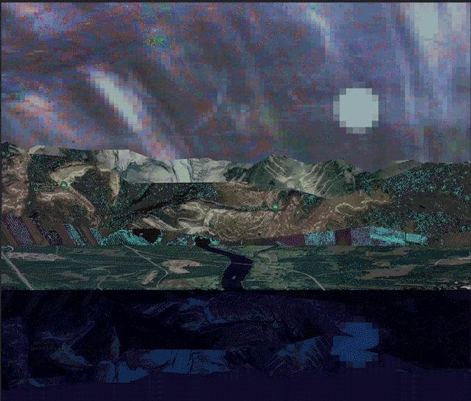

Imagine, if you can, a small room, hexagonal in shape, like the cell of a bee. It is lighted neither by window nor by lamp, yet it is filled with a soft radiance. There are no apertures for ventilation, yet the air is fresh. There are no musical instruments, and yet, at the moment that my meditation opens, this room is throbbing with melodious sounds. An armchair is in the centre, by its side a reading-desk — that is all the furniture. And in the armchair there sits a swaddled lump of flesh — a woman, about five feet high, with a face as white as a fungus. It is to her that the little room belongs.
Fungus 